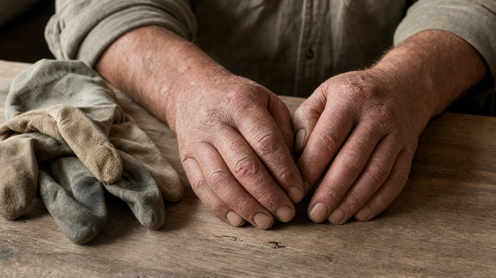

Berufsdermatologie · Chemnitz
Hautarztverfahren
& Gutachten
Wenn die Haut unter der Arbeit leidet, zählt jeder Monat. Das Hautarztverfahren setzt früh an – damit aus einem Ekzem keine Berufsaufgabe wird.
Bevor die Haut den Beruf kostet
Berufsbedingte Hauterkrankungen gehören zu den häufigsten Berufskrankheiten in Deutschland. Betroffen sind vor allem Berufe mit Feuchtarbeit, häufigem Händewaschen oder Kontakt zu reizenden Stoffen.
Pflege, Friseurhandwerk, Gastronomie, Reinigung, Bau, Metallverarbeitung, Gesundheitswesen – überall dort entstehen Handekzeme und Kontaktallergien. Das Hautarztverfahren ist dafür gemacht: Besteht der Verdacht, dass eine Hauterkrankung mit der Arbeit zusammenhängt, erstellen wir einen Hautarztbericht an den zuständigen Unfallversicherungsträger. Der kann dann frühzeitig Maßnahmen übernehmen – Hautschutz, Therapie, Schulungen – noch bevor eine Berufskrankheit anerkannt werden muss.
Entscheidend ist der Zeitpunkt. Je früher gemeldet wird, desto größer ist die Chance, den Beruf zu behalten. Warten Sie damit nicht, bis die Hände nur noch mit Handschuhen arbeitsfähig sind.
Darüber hinaus erstellen wir dermatologische Gutachten.
Ein Einblick

KI-generiert
So läuft es ab
Vorstellung
Wir untersuchen die Haut und erfassen genau, womit Sie bei der Arbeit in Kontakt kommen – einschließlich Handschuhen und Reinigungsmitteln.
Diagnostik
Häufig gehört eine Allergietestung dazu, um Kontaktallergene von reizungsbedingten Schäden zu unterscheiden.
Hautarztbericht
Wir erstellen den Bericht an den zuständigen Unfallversicherungsträger und schlagen Maßnahmen vor.
Behandlung & Verlauf
Die Therapie läuft weiter, während das Verfahren läuft. Wir dokumentieren den Verlauf und berichten nach.
Typische Konstellationen
Hautarztverfahren – Ihre Fragen
Was ist das Hautarztverfahren genau?
Ein Meldeweg der gesetzlichen Unfallversicherung. Besteht der Verdacht auf eine berufsbedingte Hauterkrankung, erstellt der Hautarzt einen Bericht. Der Unfallversicherungsträger kann daraufhin früh Maßnahmen übernehmen.
Erfährt mein Arbeitgeber davon?
Der Bericht geht an den Unfallversicherungsträger, nicht an den Arbeitgeber. Ob und wann Ihr Betrieb einbezogen wird, hängt vom weiteren Verfahren ab – wir besprechen das mit Ihnen.
Kostet mich das Verfahren etwas?
Das Hautarztverfahren wird von der gesetzlichen Unfallversicherung getragen, nicht von Ihrer Krankenkasse und nicht von Ihnen.
Brauche ich eine Überweisung?
Für das Hautarztverfahren nicht. Bringen Sie bitte mit, welche Stoffe und Reinigungsmittel Sie beruflich verwenden – wenn möglich mit Sicherheitsdatenblatt.
Muss ich meinen Beruf aufgeben?
In den allermeisten Fällen nicht. Genau deshalb gibt es das Verfahren: Es soll den Arbeitsplatzerhalt sichern, solange die Erkrankung noch beeinflussbar ist.
Termin vereinbaren
Wenn Ihre Haut unter der Arbeit leidet: Kommen Sie früh – das Verfahren wirkt am besten, solange noch wenig passiert ist.
Leipziger Straße 137, 09113 Chemnitz · Mo – Do 08:00–18:00 · Fr 08:00–14:00
Hinweis: Diese Seite dient der allgemeinen Information und ersetzt keine ärztliche Beratung oder Diagnose. Ob und in welchem Umfang Ihre Krankenkasse eine Leistung übernimmt, klären wir im persönlichen Gespräch. Das Foto im Kopfbereich zeigt unsere Praxisräume in Chemnitz. Das Symbolbild im Text wurde mit künstlicher Intelligenz erzeugt und zeigt weder reale Patientinnen und Patienten noch tatsächliche Aufnahmen aus unserer Praxis.